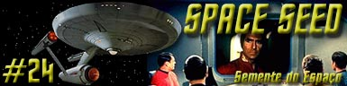
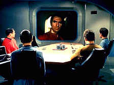
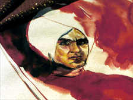
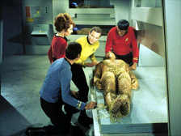
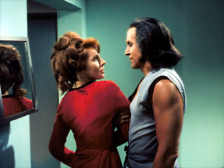
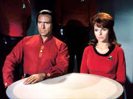

|
Série
Clássica
Temporada 1

análise do episódio por
Carlos Santos


|
MANCHETE
DO episódio |
Investigando um contato dos sensores, a USS Enterprise descobre uma nave perdida emitindo um sinal de socorro automtico, que logo identificada como uma antiga nave terrestre, lançada no final dos anos 90 do sculo XX e levando um grupo de pessoas em animao suspensa. Kirk vai a bordo junto com Spock, McCoy, Scott e a tenente Marla McGivers, uma historiadora que serve a bordo, a fim de identificar quem so os viajantes. Uma vez l, após descobrirem que as pessoas so terrestres, percebem que o sistema de uma das cmaras parece iniciar a reanimao de seu ocupante. Apesar do equipamentão apresentar problemas McCoy consegue salvar o ocupante, que levado a Enterprise.
Enquanto McCoy trata o sobrevivente removido, Scott está a bordo examinando a antiga nave, chamada S.S. Botany Bay, onde existem mais 72 pessoas vivas aguardando para serem revividas. Spock informa no haver nenhum registro da Botany Bay enquanto Kirk especula que a nave poderia ser uma nave de deportao. Spock discorda, mas não consegue apresentar outra teoria além da de Kirk, que decide rebocar a nave até a base estelar mais prxima.


Kirk chega a enfermaria e se apresenta ao homem como capito da nave, perguntando então pelo seu nome, mas ele se nega e pergunta pelo seu curso e pelas outras pessoas de sua nave. Kirk informa estar indo a base estelar 12, o que obviamente não diz muito a uma pessoa resgatada do sculo XX.
Informa também que existem 72 pessoas nas cmaras de hibernao a bordo da Botany Bay, e os quais o passageiro exige que sejam revividos. Kirk diz que s far isto quando chegarem a base Estelar 12. O Homem declara então que seu nome Khan, mas sem entrar em mais detalhes. Kirk insiste em saber mais detalhes sobre a data da partida e natureza da viagem de Khan, mas este apela a McCoy alegando cansao. O doutor convence então a Kirk que espere, porm antes que este deixa a enfermaria Khan pede a Kirk para ter acesso aos manuais tcnicos da Enterprise, com o que capito concorda.
De volta a ponte Kirk discute com McCoy sobre qual seria a origem de Khan, estando Spock inclinado a concluir que seu passageiro era um ser humano geneticamente melhorado, resultado de experincias para melhoria da raa humana realizadas por cientistas da Terra do sculo XX. Estes seres se rebelaram e tomaram o poder em vrias naes do mundo, o que começou o perodo chamado de guerras eugnicas e que ao final quase resultou na destruio total da Terra. Spock especula ainda que ao final da guerra deveria haver cerca de oitenta a noventa destes tais super-homens não planeta, numero muito prximo da quantidade de pessoas transportadas pela Botany Bay.

Logo depois, durante o jantar, Khan sabatinado por Kirk e Spock até que este se irrita a ponto de finalmente se revelar, não deixando duvidas de que este realmente o que Spock pensava que fosse. Ao perceber o que havia acontecido Khan deixa o jantar e volta para seu alojamento, sendo seguido por McGivers. Ele revela que pretende tomar a nave e exige que a tenente o ajude. McGivers cede e promete ajudar Khan.
Neste meio tempo Kirk e sua tripulao estão em reunio discutindo sobre Khan, agora que tem certeza de sua identidade: Khan Noonian Singh, o mais perigoso dos ditadores das guerras eugnicas. após uma breve discusso sobre o homem, Kirk ordena que seja colocado um guarda a porta do alojamentão de Khan. Pouco depois Kirk procura Khan e tenta saber mais sobre sua viagem, porm mais uma vez s obtm evasivas, embora tenha ficado claro para Kirk o perigo que seu passageiro representa.
Khan foge após Kirk deixar seu alojamento, e com ajuda da tenente McGivers, ele retorna a Botany Bay e reanima o restante de seus homens. Na ponte Kirk recebe a informação da fuga de Khan e ordena um alerta de segurana, entretanto descobre que a comunicao da nave bem como elevadores foram incapacitados por Khan que assumiu o controle da nave a partir da engenharia. Com os sistemas de suporte de vida da ponte desligados Khan da a Kirk um ultimato: Entregar o comando da nave ou morrer junto com toda a tripulao da ponte, com o que Kirk não concorda. Logo toda a equipe do comando está inconsciente.
Khan assume o controle da nave e rene os oficiais comandantes e chefes de equipe da nave, e tenta convenc-los a juntar-se ele e para isto ameaa matar Kirk, e depois dele outros membros da tripulao até conseguir seu apoio, mas não tem sucesso.
A tenente McGivers deixa a sala, e logo depois o contato visual com a cmara onde Kirk estava sendo mantido perdido. Acreditando que Kirk morreu Khan ordena a execuo de Spock, mas neste meio tempo McGivers, que aparentemente mudou de idia a respeito de Khan, vai até a sala onde Kirk está preso e após enganar o guarda que o vigiava, liberta o capito da Enterprise. Neste momento, Spock chega, escoltado por um guarda que posto inconsciente pelo Vulcano após ser atacado por Kirk.
Kirk ordena Spock que inunde a nave com gs paralisante. Na sala de reunies, Khan percebe que perdeu contato com seus homens não momentão em que o gs comea a inundar o local. Ele foge e se refugia na engenharia, cruzando os circuitos de propulso a fim de causar a exploso da nave. Kirk o segue e entra em combate corpo a corpo, e após derrotar Khan conserta os circuitos eliminando o perigo.
Com Khan e seus seguidores derrotados, Kirk agora tem a missão de julg-los, incluindo a tenente McGivers. Ela d então Khan a opo de ir para um planeta desabitado e tentar comear um novo mundo l. Khan aceita, assim como McGivers, e so deixados em Ceti Alfa V onde tentaro sobreviver.
comentários:
Vinte e três anos após o fantasma nazista (movido pela teoria da raa Ariana de Adolf Hitler) ter levado a humanidade a uma escalada de violncia e destruio jamais vista, Jornada nas Estrelas voltaria a abordar o tema da melhoria gentica dos seres humanos. O episodio que parecia uma releitura desta questão virou uma profecia, pois justamente nos anos noventa do nosso sculo XX que o avano da cincia na rea da pesquisa gentica veio a publico na forma de uma pauta que inclui o mapeamentão de genoma e clonagem de seres humanos.
O sucesso de Space Seed em grande parte devido presena de Ricardo Montalban, que encarna o papel do super vilo com maestria. Embora ao longo do episodio Khan se esforce para provar a Kirk e Cia que suas intenes so boas (Ah, estes viles!), Khan s consegue nos convencer de que realmente perigoso e de que não devemos deix-lo a solta, a questão como, pois rapidamente Khan compreende o funcionamentão das funes criticas da Enterprise e está preste a vencer Kirk em seu prprio terreno.

De qualquer maneira, Khan precisa de um elementão a bordo para fazer com que seu domnio da nave fosse mostrado de forma plausvel. Por outro lado, Uhura salva a barra do corpo femininão da nave, ao se manter firme quando a situao exigiu. Porm, o papel de McGivers vai além de ser um simples objeto de trama, pois se Khan domina a Enterprise por causa de sua fraqueza, Kirk vence por que Mcgivers não tinha certeza de si mesma, e acaba dando a ele a chance de vencer Khan. Longe de ser um simples peo McGivers na verdade a rainha do jogo de ambos, pois fica claro que sem a ajuda dela Khan não poderia ter dominado a nave, mesmo com todo alegada superioridade, e também sem ajuda dela Kirk não teria retomado a nave. Xeque mate!
Os dois adversrios, Khan com seu intelecto superior e Kirk com sua firmeza de propsito, representam ambos o mesmo progresso que Roddenberry não rejeitava, mas para qual tinha receios, conforme mostrado ao longo da Série Clássica. Se isto intencional ou no, o fato que a presena de McGivers e suas aes parecem querer dizer a todos ns que nossa fraqueza o que nos faz fortes, uma mensagem que se encaixa bem não rosrio de Jornada nas Estrelas. Nem Kirk nem Khan podiam vencer sem McGivers, elementão mais emocional do segmento, logo o mais humano.
Alm disto o argumentão de juntar um personagem mais contemporneo ao espectador a tripulao da Enterprise um dos elementos que sempre fizeram sucesso entre os fãs como foi em Tomorrow is Yesterday e voltaria a acontecer em The City on The Edge of Forever. Embora Khan seja oriundo de um passado que poderamos chamar de mais alternativo do que o passado do capito Christopher e de Edith Keeler, este tipo de situao parece criar um link do espectador com o episodio ganhando de imediato sua simpatia. Podemos comprovar isto logo não inicio do segmento, quando so confirmadas a origem e a provvel data de lanamentão da Botany Bay. Estes dados por si s j atiam a curiosidade, e levantam diversas questes que vo sendo respondidas pelo roteiro não tempo certo.
No bastasse a qualidade intrnseca do segmento, Space Seed tem também um grande impacto na mitologia de Jornada, pois nele temos referencia a terceira guerra mundial da Terra, as guerras eugnicas, ao perodo de tempo onde a Série Clássica inicialmente estaria situada, ou seja, final do sculo 22 (o ano de lanamentão da Botany Bay aproximadamente 1990, somados com os 200 anos de diferena citados em tela isto nos leva a uma estimativa de que o episódio se passa em 2190) data que posteriormente prpria franquia abandonou. Uma outra citao feita refere-se a data de 2018 feita por McGivers, pois ela declara que até esta data as viagens espaciais duravam anos, dando a entender que algo teria acontecido neste ano referente as viagens espaciais. Em todo caso tudo isto foi pulverizado ao longo do tempo e serve apenas para alimentar discusses dos fãs em diversos fruns espalhados por ai.
Alm de Ricardo Montalban, o elenco regular também está muito bem neste segmento. Shatner domina bem a sua participao em todo o episodio com uma atuao segura e eficiente, encarnando um dos melhores momentos de seu personagem na TV. O mesmo vale para Nimoy, embora não aparea não mesmo plano de seus outros dois colegas dramaticamente falando.
Deforest Kelley embora aparea pouco, quando o faz de forma marcante principalmente em sua cena com Montalban, quando este aperta uma faca contra seu pescoo.

A cena onde os Kirk e Spock conversam na ponte sobre Khan e sobre como proceder a respeito dele e seu grupo investe o papel de primeiro oficial de Kirk de uma relevncia poucas vezes vista. até mesmo alguns detalhes menores geralmente ignorados so mais bem tratados aqui, ou algum discorda que to poucas vezes um grupo avanado da Série Clássica foi to bem formado como o que desembarcou na Botany Bay?
Alm disto o episodio também tem algo de continuidade ao reacender a discusso Poder absoluto corrompe de forma absoluta iniciada em Where No Man has Gone Before, ou a questão da selvageria inerente a raa a humana j apontada em A Taste of Armageddon trazendo novos aspectos desta discusso.
Tudo bem que difcil explicar o que uma historiadora fazia a bordo da Enterprise, ou como que a biblioteca técnica da Enterprise não considerada material classificado principalmente para desconhecidos recm a bordo, e mais uma vez a autoridade de Kirk parece tremendamente exagerada no que diz respeito soluo adotada sobre o que fazer com Khan e seus seguidores. A importncia histrica deste grupo de pessoas seria enorme conforme o episodio faz questão de frisar, além disto o perigo de deixar estas pessoas solta, mesmo num planeta ermo algo que extrapola (ou deveria) a autoridade de um simples capito. Em nome das qualidades deste segmentão como um todo, vamos esquecer tais questes desta vez.
Kirk:
I thought you said it couldn't possibly be an Earthá vessel.
("Achei que voc disse que não poderia ser uma nave
humana.")
Spock: I fail to understand why it gives you pleasure to see me
proven wrong.
("não consigo entender por que provar que estou errado lhe
d prazer.")
Kirk:
An emotional Earthá weakness of mine.
(" uma fraqueza emocional humana minha.")
Kirk: You ready, Bones?
("Voc está pronto, Magro?")
McCoy: No. I signed aboard this ship to practice medicine, not to
have my atoms scattered across space by this gadget.
("No. Eu me alistei nesta nave para praticar medicina,
não para ter meus tomos espalhados pelo espao por essa
geringona.")
Kirk:
You're an old-fashioned boy, McCoy.
("Voc
um rapaz antiquado, McCoy.")
Khan:
Where am I?
("Onde estou?")
McCoy: You're-- You're in bed, holding a knife até your doctor's
throat.
("Voc está na cama, segurando uma faca na garganta do
seu mdico.")
Khan: Answer my question.
("Responda a minha pergunta.")
McCoy: It would be most effective if you would cut the carotid
artery, just under the left ear.
("Seria mais eficaz se voc cortasse a artria cartida,
bem abaixo da orelha esquerda.")
Khan: I like a brave man.
("Eu gosto de um homem corajoso.")
McCoy:
I was simply trying to avoid an argument.
("Eu
s estava tentando evitar uma discusso.")
Spock:
Gentlemen.
("Senhores.")
Kirk: Mr. Spock, you misunderstand us. We can be against him and
admire him all até the same time.
("Sr. Spock, voc não nos entende. Podemos estar contra
ele e admir-lo ao mesmo tempo.")
Spock: Illogical.
("Ilgico.")
Kirk: Totally.
("Totalmente.")
Spock:
It would be interesting, Captain, to return to thaté world in a
hundred years and to
learn What crop has
sprung from the seed you planted today.
("Seria interessante, capito, voltar para aquele mundo em
cem anos para ver que colheita saiu da semente que o senhor plantou
hoje.")
Kirk:
Yes, Mr. Spock, it would indeed.
("Sim, Sr. Spock, seria mesmo.")
 Na
verso original do roteiro (de Carabatsos e Hammer) a Enterprise
danifica seriamente e precisando de reparos somente realizveis em
Eminiar VII, entre em rbita contra a vontade do governão local e
Kirk se transporta ao solo, s para descobrir sobre a guerra (nos
moldes apresentados na verso filmada) com um planeta vizinho.
Nesta verso Mea também declarada uma baixa e planejava se
casar com Sar. Kirk destri o computador arriscando severo
envenenamentão radioativo. Nesta verso não era feita nenhuma meno
em deixar diplomatas para três para ajudar nas negociaes de paz.
Na
verso original do roteiro (de Carabatsos e Hammer) a Enterprise
danifica seriamente e precisando de reparos somente realizveis em
Eminiar VII, entre em rbita contra a vontade do governão local e
Kirk se transporta ao solo, s para descobrir sobre a guerra (nos
moldes apresentados na verso filmada) com um planeta vizinho.
Nesta verso Mea também declarada uma baixa e planejava se
casar com Sar. Kirk destri o computador arriscando severo
envenenamentão radioativo. Nesta verso não era feita nenhuma meno
em deixar diplomatas para três para ajudar nas negociaes de paz.
 Botany
Bay na atual cidade de Sydney o local onde explorador inglês
James Cook comandando o HM Bark Endeavour ancorou em 1770 na costa
Australiana, então chamada de Nova Holanda e declarada soberania
Britnica. O barco
deixou o Porto de Plymouthá não dia oito de agosto de 1768, parou nos
Aores para reabastecimentão e aportou não Rio de Janeiro em 13 de
novembro, em uma de suas escalas durante a viagem de volta ao mundo
de três anos. A colnia penal citada por Kirk em Space Seed
foi estabelecida em 1778 em territrio então inexplorado.
Botany
Bay na atual cidade de Sydney o local onde explorador inglês
James Cook comandando o HM Bark Endeavour ancorou em 1770 na costa
Australiana, então chamada de Nova Holanda e declarada soberania
Britnica. O barco
deixou o Porto de Plymouthá não dia oito de agosto de 1768, parou nos
Aores para reabastecimentão e aportou não Rio de Janeiro em 13 de
novembro, em uma de suas escalas durante a viagem de volta ao mundo
de três anos. A colnia penal citada por Kirk em Space Seed
foi estabelecida em 1778 em territrio então inexplorado.
 John
Milton (1608-1674) citado por Khan autor de Paradise Lost
(O Paraso Perdido"), obra a qual o roteiro faz referencia,
um poema pico inglês baseado em assunto bblico. Uma obra em 12
livros cujo tema a criao do mundo, a queda de Lcifer e o
pecado original. Este livro assim como sua continuao Paradise
Regained podem ser encontrados na estante de Khan em Ceti Alfa V
quando Chekov acidentalmente descobre seu acampamentão em Jornada
nas Estrelas II: A Ira de Khan. A citao feita por Kirk
retirada dos seguintes versos:
John
Milton (1608-1674) citado por Khan autor de Paradise Lost
(O Paraso Perdido"), obra a qual o roteiro faz referencia,
um poema pico inglês baseado em assunto bblico. Uma obra em 12
livros cujo tema a criao do mundo, a queda de Lcifer e o
pecado original. Este livro assim como sua continuao Paradise
Regained podem ser encontrados na estante de Khan em Ceti Alfa V
quando Chekov acidentalmente descobre seu acampamentão em Jornada
nas Estrelas II: A Ira de Khan. A citao feita por Kirk
retirada dos seguintes versos:
Infernal
world! and thou, profoundestá Hell,
Recive thy new possessor - one who brings
A mind not to be changed by place or time.
The mind is its own place, and in itself
Can make a Heaven of Hell, a Hell of Heaven.
Here até least / We shall be free
We may region secure; and, in my choice,
To region is worthá ambition, thoughá in Hell:
Better
to regin in Hell than serve in Heaven
 Sikhs:
Uma das muitas religies de origem Indiana, a palavra "Sikh"
significa "disciplina". não há uma hierarquizao na
organizao clerical da religio. O fundador do Sikhismo foi o Guru
Nanak Dev (1469 - 1539).
Sikhs:
Uma das muitas religies de origem Indiana, a palavra "Sikh"
significa "disciplina". não há uma hierarquizao na
organizao clerical da religio. O fundador do Sikhismo foi o Guru
Nanak Dev (1469 - 1539).
 A
filosofia sikhá surgiu como uma unio de elementos do islamismo e do
hindusmo. Como os muulmanos, os sikhs veneram um deus único e
rejeitam o sistema de castas. A religio foi formulada por nove gurus,
ou lderes espirituais que se seguiram a Nanak. O último guru morreu
em 1708 e hoje o texto sagrado do sikhismo, o Adi Grantha, venerado
como um "guru vivo". Durante
a sua vida o Guru Gobind Singhá estabeleceu a ordem Khalsa (o puro), os
soldados-santos, da qual provavelmente Khan devia fazer parte. A ordem
Khalsa ergue as maiores virtudes dos Sikhs, dedicao e Consciência
social. Os Khalsa so homens e mulheres que passaram a cerimnia Sikh
do batismo e que seguem estritamente o Cdigo de Conduta e de Convenes
Sikh, o Reht Maryada, e que usam os artigos fãsicos prescritos da f.
Sendo um dos mais comuns o de não cortar o cabelo, sendo exigido aos
homens que o cubram com um turbante, e o Kirpan a espada cerimonial.
também se diz que os Sikhs não fazem a barba.
A
filosofia sikhá surgiu como uma unio de elementos do islamismo e do
hindusmo. Como os muulmanos, os sikhs veneram um deus único e
rejeitam o sistema de castas. A religio foi formulada por nove gurus,
ou lderes espirituais que se seguiram a Nanak. O último guru morreu
em 1708 e hoje o texto sagrado do sikhismo, o Adi Grantha, venerado
como um "guru vivo". Durante
a sua vida o Guru Gobind Singhá estabeleceu a ordem Khalsa (o puro), os
soldados-santos, da qual provavelmente Khan devia fazer parte. A ordem
Khalsa ergue as maiores virtudes dos Sikhs, dedicao e Consciência
social. Os Khalsa so homens e mulheres que passaram a cerimnia Sikh
do batismo e que seguem estritamente o Cdigo de Conduta e de Convenes
Sikh, o Reht Maryada, e que usam os artigos fãsicos prescritos da f.
Sendo um dos mais comuns o de não cortar o cabelo, sendo exigido aos
homens que o cubram com um turbante, e o Kirpan a espada cerimonial.
também se diz que os Sikhs não fazem a barba.
 Quem
tiver a curiosidade de saber como possivelmente foram as Guerras Eugnicas
j pode matar a vontade. Em abril de 2001 a Pocket Books lanou The
Rise and Fall of Khan Noonien Singh, Vol. 1 (Star Trek: The Eugenics
Wars) e um ano depois a sequncia
The Rise and Fall of Khan Noonien Singh, Vol. 2 (Star Trek:
The Eugenics Wars) ambos escritos por Greg Cox, autor de outras
novelas baseadas em Jornada nas Estrelas.
Quem
tiver a curiosidade de saber como possivelmente foram as Guerras Eugnicas
j pode matar a vontade. Em abril de 2001 a Pocket Books lanou The
Rise and Fall of Khan Noonien Singh, Vol. 1 (Star Trek: The Eugenics
Wars) e um ano depois a sequncia
The Rise and Fall of Khan Noonien Singh, Vol. 2 (Star Trek:
The Eugenics Wars) ambos escritos por Greg Cox, autor de outras
novelas baseadas em Jornada nas Estrelas.
 O
modelo da nave Botany Bay iria aparecer novamente (remodelado com um
cargueiro) em The Ultimate Computer. Os cenrios das cmaras
de animao suspensa (na realidade a moldura de uma delas) vistas no
interior de tal nave seriam incorporados a o laboratrio mdico de
McCoy posteriormente, mesmo destinão da cmara de presso vista no
segmento
O
modelo da nave Botany Bay iria aparecer novamente (remodelado com um
cargueiro) em The Ultimate Computer. Os cenrios das cmaras
de animao suspensa (na realidade a moldura de uma delas) vistas no
interior de tal nave seriam incorporados a o laboratrio mdico de
McCoy posteriormente, mesmo destinão da cmara de presso vista no
segmento
 Mais informações
sobre o personagem Khan em um material especial completo sobre Jornada
Nas Estrelas II: A Ira de Khan, disponvel aqui.
Mais informações
sobre o personagem Khan em um material especial completo sobre Jornada
Nas Estrelas II: A Ira de Khan, disponvel aqui.
Histria de
Gene
L Coon e Carey Wilbur
Direo de Marc
Daniels
Exibido em 16/02/1967
produção: 25
Elenco:
William Shatner
como James Tiberius Kirk
Leonard Nimoy como Spock
DeForestá Kelley como Leonard H. McCoy
Nichelle Nichols como Uhura
George Takei como Hikaru Sulu
Elenco convidado:
Ricardo Montalban
como Khan
Madlyn Rhue como Marla McGivers
Blaisdell Makee como Tenente Spinelli
Mark Tobin como Joaquin
Kathy Ahart como um tripulante
John Winston Chefe de transporte Kyle